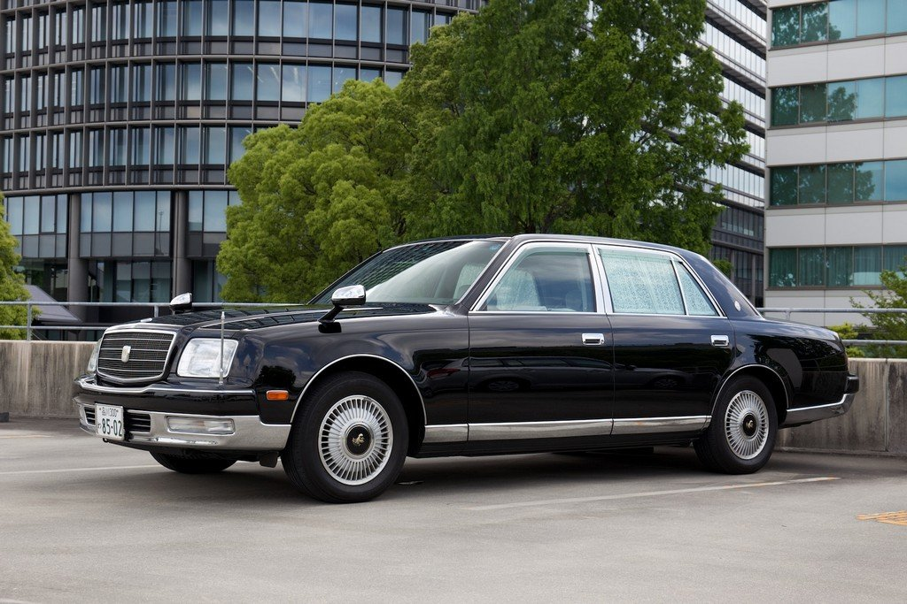

Toyota Century

Century - представительский седан компании Toyota, выпуск которого начался в 1967 году. За 51 год производства сменилось 3 поколения (последнее увидело свет в 2017 году). Преимущественно автомобиль используется для перевозки важных государственных деятелей Японии, а также японских послов и консулов в некоторых странах. Интересный факт - существует особая версия автомобиля - Century Royal, которая используется старшими членами Императорского дома Японии. Было построено всего 4 автомобиля по причине огромной стоимости производства каждого из них (52 500 000 йен).
На данной странице представлена информация о втором поколении автомобиля. Выпуск начался в 1997 году и происходил до 2017 года. Длина составляет почти 5,3 метра, что сопоставимо с Mercedes S-klasse. Под капотом находится 12-ти цилиндровый агрегат 1GZ-GE объёмом 5 литров, мощностью 280 л.с. КПП - автоматическая. Как и подобает автомобилю такого класса, он оснащён независимой пневмоподвеской,регулируемой из салона,полным электропакетом, вентиляцией и прогревом сидений.
Салон имеет очень качественную отделку. Передняя панель, вставки в дверях, элементы дизайна на заднем ряду отделаны деревом и качественным пластиком. Сиденья обтянуты велюром (может быть и кожа). Сзади имеется раздельный климат-контроль, в наличии функции откидывания и массажа,а также откидные столики из дерева.